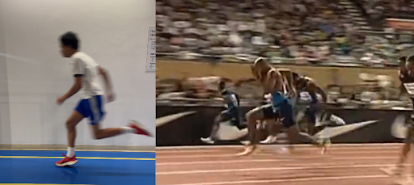
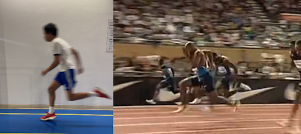

2.0: DRIVE
 

2.1: How to drive?
If you’re in high school, you might commonly notice that the drive phase gets overlooked in sprint training.
They either care too much about the start or top speed.
Here’s the thing:
The drive phase is easy, if the start sets it up properly.
In most elite sprinters, the drive phase lasts from 3-30m (3 because of the start).
The mechanics don’t really change from the first step to the drive phase. However…
The key element is that your torso and your shin angles rise gradually as you pick up speed.
So, the mechanics would be this⁽¹⁰⁾:
- Torso rises gradually (45 degrees to nearly upright by 30m)
- Shin angle matches torso angle
- Arms stay aggressive so you don’t fall
- Triple extension
You will also feel your strides naturally getting faster…and longer,
that’s what you want.
If you really want to feel yourself actually driving in your training, some people even do what is called a valsalva maneuver…
Or simply,
holding your breath to engage the core and releasing the air gradually⁽¹¹⁾.
It’s like the human form of an exhaust!
2.2: Importance
Once again, why?
Why do we drive?
What’s so important that I even had to separate the drive phase from the start yet the mechanics are so similar?
To answer why I even separated, the primary goals are different, which is what answers that.
And the primary goal is…
Reach the highest speeds possible before transitioning to top speed.
Sounds pretty obvious, right?
As you already heard from the start, it should overcome your inertia.
Now that you have already started moving, it’s natural that you need to pick up your speed as fast as possible.
That’s how a sprint works.
Now the secondary goal?
Be patient.
Woah dude, woah…let’s slow down there.
Having patience in a sprint?
That sounds like the secondary goal feels CONTRADICTING to the primary goal?
Doesn’t sound right to me…
Well, it doesn’t…until I explain it,
let me explain why you even need patience in a race that lasts only 100m.
First of all, when I say patience, I don’t mean the marathon endurance level of patience that’s required for those kinds of races,
no,
in sprinting, patience is totally something else.
Patience is more in your mental state rather than mentally thinking “faster, faster…FASTER”⁽¹²⁾.
What does that mean?
“Patience” in your mental state should relax you during the race,
mainly your face, hands, and other muscles in your body that don’t need to be stiff.
Simply execute what you’ve done in your training.
That’s it.
And just like patience, don’t confuse relaxation with a lack of effort.
Nothing, not even a race that lasts 10 seconds for the best of athletes can rush⁽¹³⁾.
For the explanation, that is the explanation to why we drive that your start phase hasn’t already answered:
Gradually pick up your speed without rushing.
2.3: Analysis
Now it’s time to put your even deeper knowledge of the start (or I guess late start) into play.
The photo you see is the late drive phase for both me and Asafa Powell, just at different parts of the stride, so we’re nearly upright.
As always, what do you notice before I tell you?
One thing’s for certain is our head positions,
my head is more forwards already,
while Powell’s head is still slightly neutral, looking down at the track.
That matters, even when you’re almost upright, the force still needs to be applied horizontally.
Another thing I noticed is Powell’s shin angles compared to mines, two things actually:
He’s still recovering the back foot low, mines is basically doing the figure-4 (foreshadowing) and
his shin angles match his torso way better than mines (see the front foot)
The last main thing that I’ve noticed is the spine,
Powell’s posture is a straight line from head to the hips, which is optimal
mine is more rounded and “forward”, especially in the shoulders.
2.4: Application
Now for applying it to your training.
If you’re still struggling with the fundamentals that were mentioned in the start, then continue doing that.
But let’s assume that you’re already solid and ready to step up your training.
In that case, these are the best exercises/drills you can do to maximize your drive phase:
- Sled training
- Hill sprints
- Wall drills (like fast switching legs, getting into good body angles)
- In general? Anything that reinforces low body angle and improves strength.
If you understand that, then you’ll know which exercises work for improving the drive phase, and which ones don’t.
And boom, that’s it for the application, much shorter than the start, right?
I told you it will get faster from here, just like you will in your 100m race.
Now it’s time for the MOST “invisible phase” in sprinting: your transition phase.